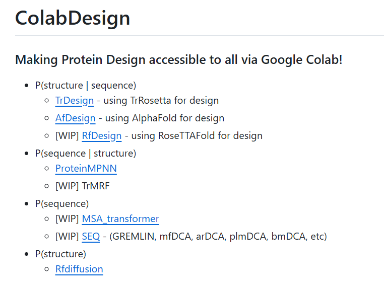
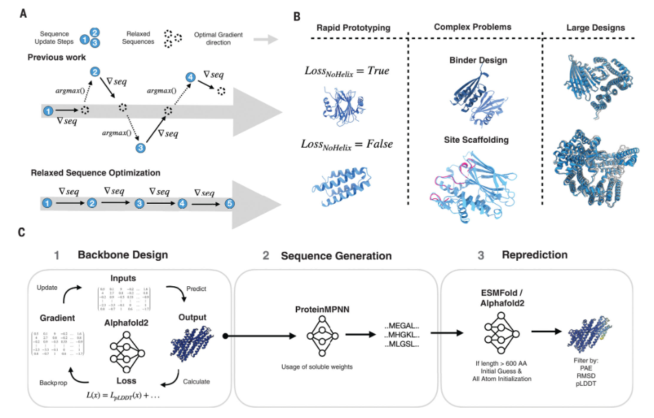
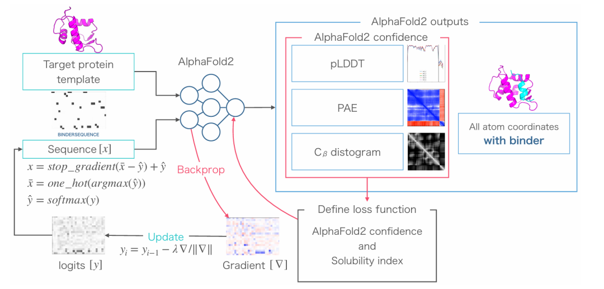

ColabDesign 是由 Sergey Ovchinnikov 团队开发的一款开源蛋白质设计工具包。它集成了 AlphaFold、RoseTTAFold、TrRosetta 和 ProteinMPNN 等前沿算法，并借助 Google Colab 平台提供的免费 GPU/TPU 算力，大幅降低了蛋白质设计的技术门槛。
该工具提供多种核心功能，涵盖固定骨架序列设计、蛋白质稳定性优化和环肽设计等，完整支持从结构生成序列到功能性蛋白质设计的全流程。ColabDesign 致力于实现“蛋白质设计民主化”，让科研人员与爱好者都能轻松开展蛋白质设计、结构优化等前沿探索。

📌AFdesign
AFdesign 作为 ColabDesign 中最具代表性的模块，其核心理念在于将 AlphaFold2 转化为“设计引擎”。通过反向传播优化输入 AF2 的序列或结构参数，使预测结果（如较高的 pLDDT、较低的 PAE）匹配预设目标，从而“引导”AF2 生成能够折叠成预期结构的新序列。
功能：在给定蛋白质骨架结构的前提下，生成能够折叠为目标构象的新氨基酸序列。
示例代码：
model = mk_afdesign_model(protocol="fixbb")model.prep_inputs(pdb_filename="1TEN.pdb", chain="A")model.design_3stage()
应用：用于优化或重新设计蛋白质序列，同时维持其三维结构不变。
功能：生成指定长度的全新蛋白质序列，并确保其具有高 pLDDT、低 PAE 及丰富的内部接触。
示例代码：
model = mk_afdesign_model(protocol="hallucination")model.prep_inputs(length=100)model.set_seq(mode="gumbel")model.design_soft(50)model.set_seq(model.aux["seq"]["pseudo"])model.design_3stage(50, 50, 10)
应用：完全从头设计具有稳定结构的新型蛋白质。
功能：针对特定目标蛋白，设计与之结合的蛋白质或多肽，优化结合界面、内部接触及结构置信度。
示例代码：
model = mk_afdesign_model(protocol="binder")model.prep_inputs(pdb_filename="4MZK.pdb", chain="A", binder_len=19)model.design_3stage(100, 100, 10)
应用：开发与目标蛋白特异性相互作用的结合蛋白或肽段。
功能：在保留已知功能片段（如结合基序或结构域）的基础上，扩展或生成新的蛋白质结构。
示例代码：
af_model = mk_afdesign_model(protocol="partial")af_model.prep_inputs(pdb_filename="6MRR.pdb", chain="A", pos="3-30,33-68", length=100)af_model.rewire(loops=[36])
应用：在维持关键功能区的前提下进行结构创新与环区改造。
这篇文章在2024年10月25日发表于《Science》上，他们提出了一种基于“幻觉”（hallucination）策略的创新型蛋白质设计方法。该方法通过在“松弛序列空间”（relaxed sequence space）中进行优化，利用机器学习模型（如AlphaFold2）结合梯度下降算法，直接在连续型序列表示中迭代优化蛋白质骨架结构，整个过程无需重新训练模型。
该方法展现出卓越的可扩展性与实用性，能够高效地生成从100到1000个氨基酸不同规模的高质量蛋白质结构。研究团队通过实验验证了超过100种设计蛋白，包括通过X射线晶体学解析的高分辨率单链蛋白结构，以及基于冷冻电镜（cryo-EM）的密度图分析。此外，他们还成功设计了合成蛋白质-蛋白质相互作用（PPI）系统，例如异源二聚体（heterodimers），展现了该方法在复杂生物分子设计中的应用潜力。

该方法的核心流程与创新点如下：
1. 初始化
从随机序列或目标结构模板出发，输入AlphaFold2（AF2）以获取初始结构预测。
2. 损失计算
根据设计目标（如pLDDT置信度、回转半径Rg、接触数量、螺旋含量等）定义损失函数，用以量化AF2预测结构与预期特征之间的差异。
3. 梯度更新
通过AF2进行反向传播，计算序列梯度，并在连续的松弛序列空间中对序列表示进行迭代更新，避免使用argmax等离散化操作。该过程持续迭代直至收敛。
4. 序列生成与筛选
收敛后，将连续表示解码为真实蛋白质序列：首先利用ProteinMPNN为优化后的骨架生成候选序列，随后使用ESMFold或AF2（配合initial guess和大爆炸初始化策略）进行结构重预测，并基于RMSD或TM-score等指标对生成序列进行过滤。
关键创新：
与传统方法相比，RSO通过在连续空间中进行优化，避免了离散优化中常见的“跳跃偏差”，显著提高了优化过程的稳定性。
引入ProteinMPNN弥补了AF2对突变过于宽容的局限性，有效增强了设计序列在实验中的可折叠性。
peptide_binder_design.ipynb）展示了一种与BindCraft高度相似的设计流程，其核心是利用预训练的AlphaFold2 (AF2) 模型，通过反向传播（Backpropagation） 进行“序列幻觉”（Hallucination），从而从头设计能够高亲和力结合目标蛋白的多肽或蛋白质分子。
使用方法简明直接，主要包含以下步骤：
1. 输入准备 (Input Preparation)
用户需提供靶点蛋白信息（如PDB代码、链ID、是否允许骨架柔性等）。
设定结合物参数（如长度、初始序列、链ID等）。
配置模型运行参数（如是否启用多聚体模式、循环迭代次数、使用的模型数量等）。
2. 模型初始化 (Model Initialization)
创建以“binder”协议运行的AfDesign模型。
自动加载和处理靶点PDB结构及用户定义的参数。
执行内存清理等准备工作。
3. 序列优化 (Sequence Optimization)
选用特定的优化器（例如pssm_semigreedy），通过梯度下降或半贪婪搜索方法迭代优化结合物序列。
优化目标是最大化结合界面接触数（interface contacts）和结构置信度（pLDDT分数）。
最终输出可能包括最优序列及一个代表氨基酸偏好的概率矩阵（PSSM）（具体取决于所选优化器）。
4. 结果输出 (Output)
保存优化后的复合物结构PDB文件。
展示最终设计序列，并提供多种结构可视化（如按pLDDT分数着色、构象变化动画）。
若生成了PSSM，可绘制氨基酸概率热力图，直观展示每个位置上的残基偏好，为后续分析提供依据。
除了上述例子之外，ColabDesign 还提供了多个专用设计模块，覆盖了更多特定蛋白质工程场景：
af_cyc_design：支持环肽（cyclic peptide） 的定制化设计，可针对特定靶点或结构特征进行构象约束性设计。环肽设计系列（二）| AfCycDesign
disulfide_design：专注于二硫键（disulfide bond） 的理性设计。通过调整接触约束和 pLDDT 损失函数，优化序列以引入或稳定二硫键，从而增强蛋白质的结构稳定性和热力学性能。
partial_hallucination_rewire：实现在保留关键功能片段（如来自PDB的motif） 的前提下，对其周围支架区域（scaffold）进行重新设计或连接。该协议特别适用于在维持功能基序的同时改造整体结构或构象。
除了AFdesign，ColabDesign 还集成了 RFdiffusion、RFdesign 等工具，并提供了可直接在 Colab 中运行的示例。不过这些模块在交互性和设计灵活性上不如 AFdesign 丰富，因此本文不再展开介绍。
💡结语